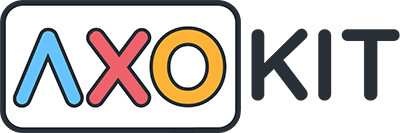

Application IA de soutien scolaire
Souveraineté Numérique – Solidarité – Excellence Scientifique
AXOKIT : L'IA AU SERVICE DE L'ÉDUCATION NATIONALE
LE CONCEPT
Axokit est une station d'Intelligence Artificielle scientifique 100 % autonome (Offline). Elle offre aux élèves un tuteur numérique de haut niveau en Mathématiques, Physique et Chimie, sans nécessité de connexion Internet ni de serveurs distants.
LE MODÈLE ÉCONOMIQUE : SOLIDARITÉ NATIONALE
Le projet repose sur un mécanisme de péréquation entre le secteur privé et le secteur public.
- Secteur Privé (Le Levier) : Les établissements privés souscrivent à une licence annuelle « Premium » adaptée à leur catégorie.
- Secteur Public (Le Bénéficiaire) : Grâce aux fonds du privé, l’État équipe gratuitement les collèges et lycées publics.
- Coût pour le Public : 0 € (Matériel, logiciel, installation et maintenance).
- Impact Social : Distribution d'un petit-déjeuner quotidien aux élèves (via l’organisme Bii).
PILOTAGE NATIONAL (DATA)
- Souveraineté : Digitalisation 100% "Zéro Papier" des notes (Public & Privé).
- Analyse : Vision en temps réel des performances et lacunes nationales.
- Transfert (Hors-ligne) : Smartphone : Synchronisation locale (Wi-Fi/Câble) puis envoi 4G.
- USB : Extraction et dépôt sur portail en zone connectée.
L'ACCORD-CADRE AVEC L'ÉTAT
- Engagement Budgétaire : NÉANT. Aucune avance de trésorerie ni décaissement.
- Rôle de l'État : Régulateur et prescripteur. Il définit les zones prioritaires et officialise l'outil dans le programme.
- Chiffres Clés : 1 million d'élèves du privé financent l'équipement de 1,5 million d'élèves du public.
CARACTÉRISTIQUES TECHNIQUES & LOGISTIQUES
1. La Station IA
- Optimisation : Ordinateurs haute performance (400-600 €) capables de faire tourner l'IA localement.
- Accès Hybride : Version Web (pour le privé connecté) et version Locale (pour une performance totale sans internet).
2. Optimisation des Ressources
- Usage Collectif : Un seul ordinateur peut servir à tout un établissement.
- Organisation : Travail par groupes de 3 élèves, planning hebdomadaire et mode "Auditorium" via vidéoprojecteur.
POURQUOI MAINTENANT ?
- Réduction de la Fracture Numérique : Accès à l'IA même dans les zones sans internet.
- Excellence Académique : Soutien intensif dans les matières scientifiques (STEM).
- Modernisation de l'Image : Une école sans Axokit est désormais perçue comme dépassée.
NOTRE MISSION
« Garantir à chaque élève malgache un accès équitable à une éducation scientifique moderne et assurer la réussite de la nouvelle génération. »
Le Statut d'État Mentor : Vers une Souveraineté Solidaire et un Rayonnement International
Levier de Résilience : Le Statut d'État Mentor (Expansion Externe)
En tant qu'État pionnier d'AXOKIT, vous devenez l'ambassadeur de cette excellence auprès d'autres nations. En facilitant l'adhésion d'au moins un État partenaire supplémentaire, vous activez un fonds de coopération stratégique aux retombées majeures :
- Fonds de Lutte contre les Désastres Climatiques : Les revenus générés par l'expansion du réseau vers d'autres États constituent une réserve financière pour la reconstruction et la protection face aux cyclones.
- Urgence Sociale et Nutritionnelle : Ces ressources permettent de soutenir des programmes vitaux tels que la lutte contre la faim (distribution de petits-déjeuners) et la santé des élèves.
- Investissement dans l'Éducation : Au-delà de l'IA, cet apport financier externe sécurise le développement des infrastructures scolaires et l'avenir de la nouvelle génération.
Pourquoi adopter ce modèle maintenant ?
- Un apport financier important et passif : Plus le réseau d'États s'élargit, plus votre part de "coopération" augmente, vous offrant des moyens massifs pour vos programmes sociaux sans augmenter la pression fiscale.
- Réduction de la Fracture Numérique : Vous offrez le meilleur de la technologie scientifique mondiale à vos élèves, tout en protégeant votre budget national.
- Leadership Régional : Votre État démontre qu'une éducation moderne peut être le moteur d'une solidarité financière internationale.
Nous sommes convaincus que la solution AXOKIT, couplée à ce modèle de croissance mutualisée, fera de votre État un modèle de résilience exemplaire, capable de transformer l'innovation technologique en un bouclier contre les aléas climatiques et sociaux.
Nous nous tenons à votre disposition pour formaliser ce nouveau cadre de coopération internationale.